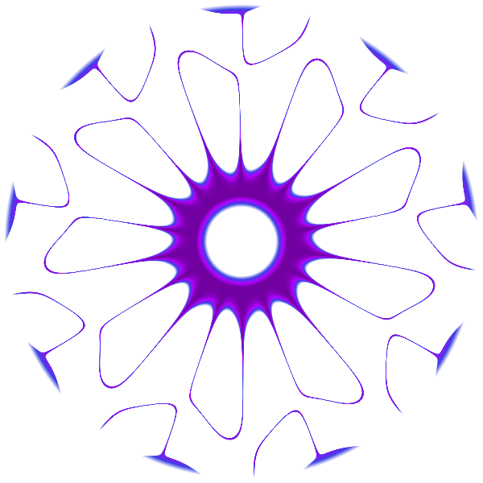
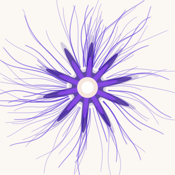
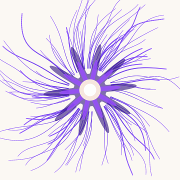
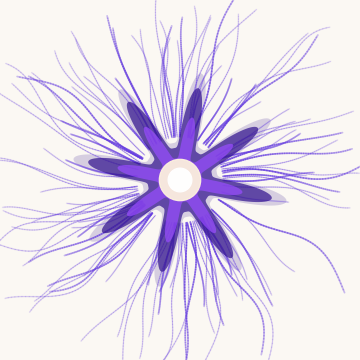
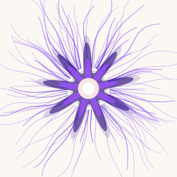
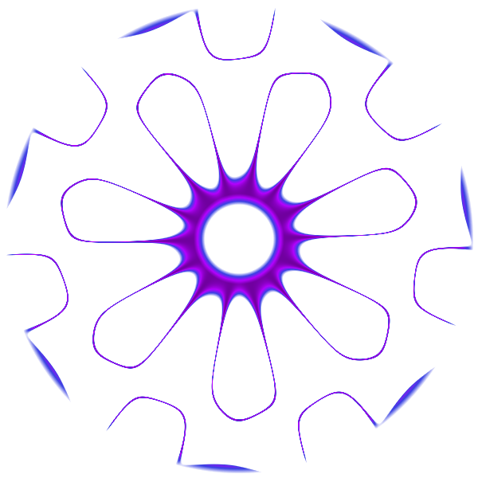
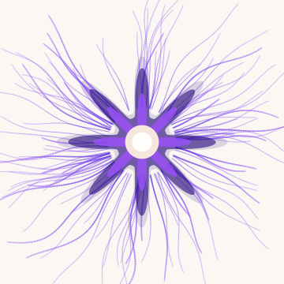

Michael’s Frequencies, Decoded.
Calculated from 248+ celestial data points.
Increases identity coherence and aligns you with your true purpose.
Belly Band: Identity is experienced as felt stability
Expands magnetism, attunement, and connection.
Solar Plexus Band: Connection is experienced as movement and action
Steadies your nervous system and keeps your energy clean.
Solar Plexus Band: Energy is experienced as drive and motion
Aligns your timing with prosperity, opportunity, and exchange.
Throat Band: Prosperity and opportunity experienced through articulation and expression
You have your four numbers. Now hear what they sound like. Pick a frequency:
A pure tone at exactly 422 Hz, calculated from your chart. No music yet. Just your signal.
You never listen to a bare tone. We weave it into full compositions. Hear your 422 Hz inside two very different songs.
The straight line is your frequency. It never moves. The music around it does.


The same four frequencies thread through all 20+ tracks, from ambient to cinematic. The music varies. Your signal never does.




